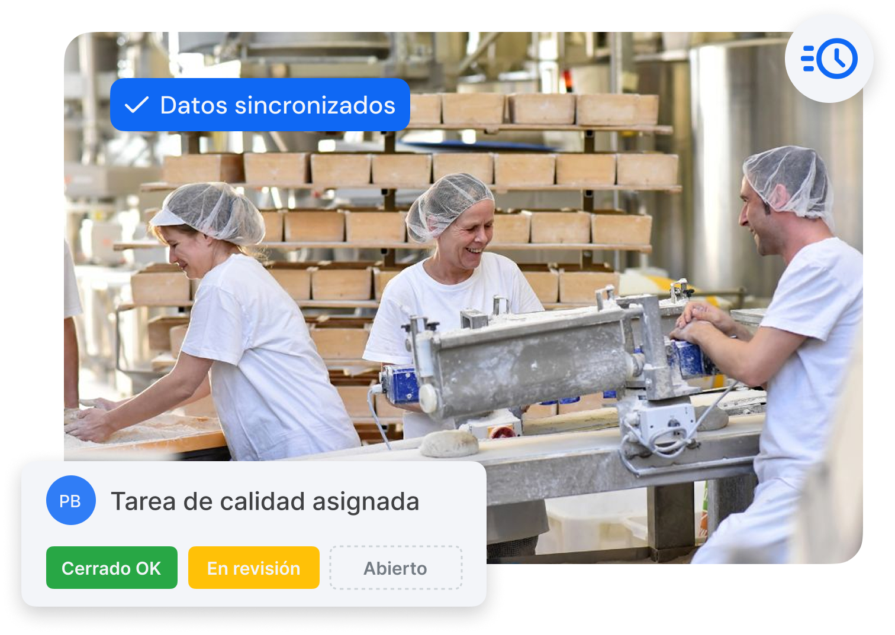
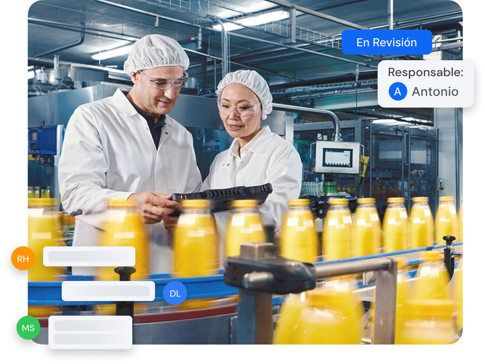

Solved agiliza las operaciones, conecta departamentos y garantiza el cumplimiento de calidad desde el primer día.
Solicita tu demo personalizada
Las operaciones en planta requieren agilidad, coordinación y datos fiables. Sin una solución digital útil y adaptada a la operativa diaria, los procesos se vuelven lentos, propensos a errores y difíciles de auditar.
Los registros en papel no se revisan a tiempo, lo que genera retrasos en la toma de decisiones.
Las incidencias se comunican de forma informal, sin trazabilidad ni responsables definidos.
Los controles de limpieza y de puntos críticos (CCPs) carecen de evidencia digital de ejecución.
Por otro lado, la preparación de auditorías resulta compleja y dispersa, basada en múltiples documentos.
Asimismo, la formación operativa depende demasiado del conocimiento de personas clave.
Con Solved centralizas la información operativa de planta: qué ocurre, cuándo ocurre y quién lo hace. Todo de forma digital, accesible y trazable.
Gestión rápida y trazable de incidencias, con responsables asignados.
Comunicación fluida entre calidad, producción y mantenimiento.
Formación práctica integrada en los registros, sin necesidad de repetir procesos.
Auditorías más simples, con toda la documentación en un solo lugar.
Generación de documentos listos en un click: reclamaciones de proveedores, reportes, …

"Lo que más valoramos es lo fácil que ha sido para el equipo adaptarse: Solved es muy intuitivo."
"Con Solved, ahora tenemos visibilidad en tiempo real de todo lo que ocurre en nuestros centros productivos. Esto nos ha permitido mejorar el control de la merma y reducir enormemente los tiempos de comunicación y duplicidad de tareas."
"Teníamos una forma de comunicar muy manual las incidencias o las acciones a realizar. Con Solved tenemos a todo el equipo conectado y reaccionamos con mucha agilidad."